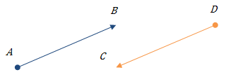

Вектором називають напрямлений відрізок. А – початок вектора, В- кінець вектора.
Вектор позначається a або AB.
Абсолютною величиною (або модулем) вектора називається довжина відрізка, що зображає вектор.
Абсолютна величина вектора a позначається |a|.
Два вектори називаються рівними, якщо вони суміщаються паралельним перенесенням. Рівні вектори однаково напрямлені і рівні за абсолютною величиною.
Координатами вектора a називають числа a1 = x1 - x1, a2 = y2 - y1, де A1 (x2, y1), A2 (x2, y2) - кінці вектора a1.
Рівні вектори мають рівні відповідні координати.
Якщо у векторів координати рівні, то вектори рівні.
Сумою векторів a i b з координатами (a1, a2) і (b1, b2) називається вектор с з координатами (a1 + b1, a2 + b2), тобто a(a1, a2) + b(b1, b2) = c(a1 + b1, a2 + b1).
Різницею векторів a і b з координатами (a1, a2) і (b1, b2) називається вектор с з координатами (a1-b1, a2-b2), тобто a(a1, a2) - b(b1, b2) = c(a1 - b1, a2 - b2).
Добутком вектора a на число λ називається вектор с з координатами (λa1, λa1), тобто λa(a1, a2) = c(λa1, λa2).
Абсолютна величина вектора λa дорівнює |λ||a|.
Напрям вектора λa, збігається з напрямом вектора a, якщо λ > 0, і протилежний напряму вектора a, якщо λ < 0.
Два вектора називаються колінеарними, якщо вони лежать на одній прямій або на паралельних прямих.
У колінеарних векторів відповідні координати пропорційні.
Скалярним добутком векторів a(a1, a2) i b(b1, b2) називається число a1b2 + a2b2.
Кутом між ненульовими векторами AB i AC називається кут BAC.
Кутом між будь-якими двома векторами a i b називається кут між векторами, що дорівнюють даним і мають спільний початок.
Кут між однаково напрямленими векторами дорівнює нулю.
Скалярний добуток векторів дорівнює добутку їх абсолютних величин на косинус кута між ними: a•b = |a|•|b|•cos φ.
Якщо вектори перпендикулярні, то їх скалярний добуток дорівнює нулю.
Якщо скалярний добуток векторів дорівнює нулю, то вектори перпендикулярні.
Вектор — це величина, яка характеризується числовим значенням і напрямком. Під направленим відрізком AB→ розуміють впорядковану пару точок, перша з яких — точка A — називається його початком, а друга — B— його кінцем. В геометрії розглядають вектори, що не залежать від точки прикладання (вільні вектори).
Вектори позначають двома способами: малими буквами латинського алфавіту (наприклад, a); двома великими буквами латинського алфавіту (наприклад, AB), де перша буква — початок вектора, а друга — кінець.
Графічно вектори зображають у вигляді направлених відрізків певної довжини AB.
Рис. 1. Вектор AB з початком в A і кінцем в B.
Чисельне значення a називається модулем чи довжиною і позначається |a|. Довжина вектора — це довжина відрізка, що зображає цей вектор.
Вектори AB і CD називають протилежно напрямленими, якщо протилежно напрямлені півпрямі AB і CD.
Вектори AB і CD називають співнапрямленими, якщо співнапрямлені півпрямі AB і CD.
Рис. 2. Протилежно напрямлені вектори.
Рис. 3. Співнапрямлені вектори.
Вектор, початок і кінець якого збігаються, називається нульовим і позначається 0 . Нульовий вектор має довжину 0. Напрям нульового вектора не визначений. Нульовий вектор прийнято рахувати співнапрямленим з будь-яким вектором. Вважається, що нульовий вектор одночасно паралельний і перпендикулярний будь-якому вектору.
Колінеарними називаються вектори, які зображаються відрізками, що лежать на одній прямій чи на паралельних прямих.
Два вектора називаються рівними, якщо вони однієї довжини і їх напрямки збігаються.
Одиничний вектор (орт) — вектор, довжина якого рівна одиниці.
Вектори на площині
Числа ax=x2−x1,ay=y2−y1 називаються координатами вектора a з початком A(x1;y1) і кінцем B(x2;y2).
Вектор з координатами ax і ay позначається (ax;ay).
Вектор a з координаsтами ax і ay позначається a (ax;ay).
Використовуючи означення координат вектора довжину можна записати формулою
|a |=a2x+a2y.
Сумою векторів a (ax;ay) і b (bx;by) називають вектор c (ax+bx;ay+by).
Геометрично суму двох векторів можна знайти за: правилом трикутника; правилом паралелограма.
Правило трикутника
Для складання двох векторів a і b за правилом трикутника обидва ці вектора переносяться паралельно самим собі так, щоб початок одного з них збігався з кінцем іншого. Тоді вектор суми задається третьою стороною трикутника, що утворився, причому його початок збігається з початком першого вектора.
Рис. 4. Правило трикутника.
Правило паралелограма
Для складання двох векторів a і b за правилом паралелограма обидва ці вектора переносяться паралельно самим собі так, щоб їх початки збігалися. Тоді вектор суми задається діагоналлю побудованого на них паралелограма, яка виходить з їх спільного початку.
Рис. 5. Правило паралелограма.
Різницею векторів a і b називають такий вектор c , який в сумі з b дає a .
Рис. 6. Різниця векторів.
Добуток вектора (ax;ay) на число λ називається вектор (λax;λay).
Два вектори a і b колінеарні тоді і лише тоді, коли їх відповідні координати пропорційні axbx=ayby.
Скалярним добутком векторів a і b називається число, яке рівне сумі добутків відповідних координат, тобто a⋅b=ax⋅bx+ay⋅by.
Скалярний добуток векторів дорівнює добутку їх довжин на косинус кута між ними, тобто a ⋅b =|a|⋅|b |⋅cos(a ;b), де (a ;b^) — кут між векторами a і b .